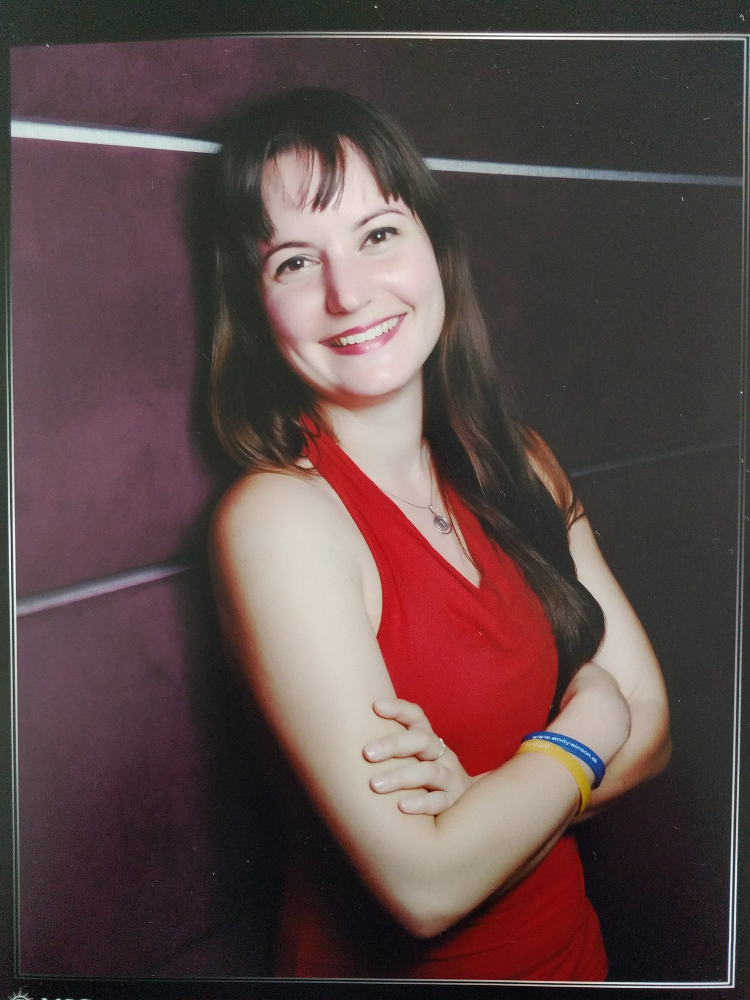

 Mgr. Tereza Balunova
Summary
I'm detail oriented individual with sales experience, analytic mind and ability to organize data.
Education
-
Masaryk University in Brno
- Masters Degree in Environmental Studies
2010-2013
- Bachelor Degree in Ecotoxicology
2010-2013
-
Bachelor Degree in Environmental Studies and Psychology
2007-2010
Work Experience

-
Essential Oils Bible
2023 - current
Responsibilities:
-
building up complex multilanguage website using Divi, ACF, WPML and various other plugins
-
data management, translations to/from English
-
social media presentation

-
Optimal-energy.cz, a.s.
2013 - current
Responsibilities:
-
energy counselling
-
full responsibility for customer aquisition and long-term care
-
preparing analysis, contracts, communication with energy distributors
Skills
-
Advanced English (CAE certificate)
-
MS Office, Google Drive, Wordpress, Divi
-
Great communicational skills
-
Great analytical and organizational skills
-
Detail oriented
-
Driving licence
Other
My Hobbies
Contact Me